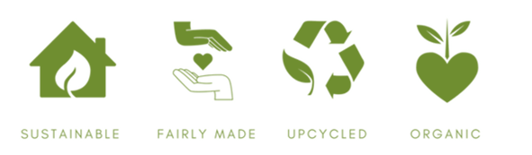

Our Mission
Lil Green Wear was founded in 2020 by Linda Bijlard. Noticing the massive impact of environmental pollution caused by the fashion industry, the founder spotted an opportunity in a potential market within Singapore to perform R&D of PEF, a 100% bio-based material made from plant sugars that can directly replace PET, an important plastic, used in many aspects of our daily life. The company name, Lil Green Wear, comes from aspirations to amplify little environmental efforts from each of us to make a great impact on the environment. We hope to develop textiles and clothing of matching, if not superior quality to the current commercial source of textiles, to significantly reduce carbon foot-print in daily life. This way “green-ifying” more and more of our daily-used items like school uniforms. Lil Green Wear could offer a fashionable yet impactful channel for everyone to play a part in conserving our environment regardless of age or status. Thus, making you look as bright as your future.
The logo of Lil Green Wear symbolizes how the fate of the environment can be made better simply by what we choose to wear. In our hands, we hold the key to plant-based apparel that is environmentally sustainable. We seek to promote this concept in hopes that our customers and investors can join us in choosing to be responsible for the future. We aim to develop and manufacture novel high quality bio-based and biodegradable polyester textiles to supply clothing manufacturers and move towards an environmentally-friendly and sustainable future while satisfying the high demand for apparel in Singapore. In this modern day and age, materials used for the manufacture of apparel have mainly been synthetic polyesters that involve many raw materials such as crude oil. This makes the fashion industry extremely detrimental to the environment. Therefore, Lil Green Wear focuses on the research and development of biodegradable and durable polyesters involving a novel technology which provides cost-competitive yet highly environmentally sustainable materials for apparel use. This novel technology that can manufacture plastics from plant-based sugars can be more cost-effective and their biodegradability allows us to close the loop of our textile life cycle.
About the Founder

I am Linda Bijlard, the CEO of Lil Green Wear. Currently I am a student at Utrecht University and I study Liberal Arts and Sciences at the honours college Utrecht Unviversity College. I am very passionate about environmental issues and with Lil Green Wear, I want to impact the fashion industry with a fresh breath of new development. Our mission is to go into research & development of sustainable fabrics.